地政学
ニースはフランス南東端でイタリア国境、モナコ、アルプス、地中海を結びます。サヴォイア、ピエモンテ、フランスの境界史が重なり、観光地でありながら欧州南北をつなぐ交通の縁辺でもあります。海と国境の都市です。
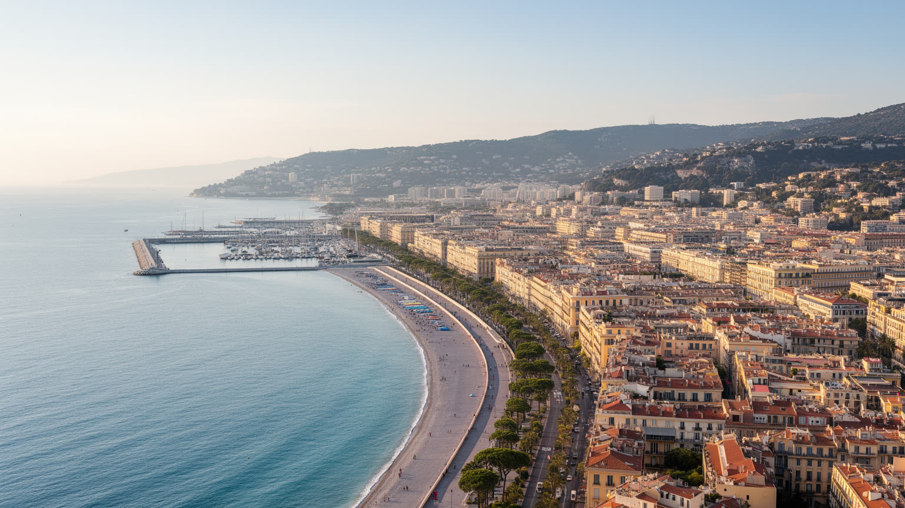
🇫🇷 フランス / プロヴァンス＝アルプ＝コート・ダジュール / World City Atlas
地中海の港、サヴォイアとフランスの境界史、冬季保養地の遺産、空港、観光労働、芸術、移民の生活が、狭い海岸平野と丘陵に重なる都市です。
都市の骨格
ニースはリゾート都市として知られる一方、港、空港、丘陵住宅、移民地区、大学病院、国境に近い交通が日常の都市構造を作っています。
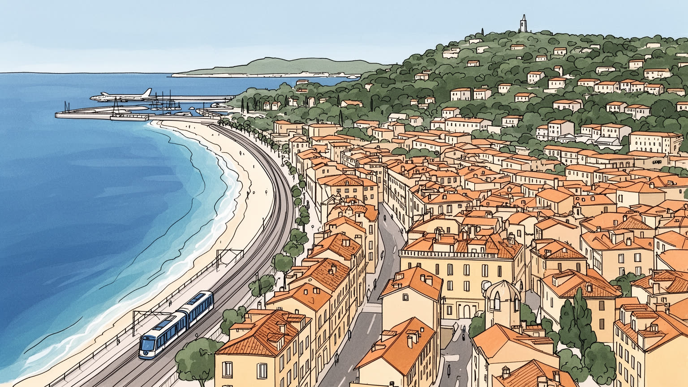
ニースはフランス南東端でイタリア国境、モナコ、アルプス、地中海を結びます。サヴォイア、ピエモンテ、フランスの境界史が重なり、観光地でありながら欧州南北をつなぐ交通の縁辺でもあります。海と国境の都市です。
観光、ホテル、飲食、空港、医療、大学、行政、港湾、建設、清掃、介護、小売が雇用を支えます。高級リゾートの収益の背後には、季節労働、通勤、住宅費、移民労働、老年人口へのケアがあります。働く港町でもあります。
旧市街の教会、ユダヤ系の記憶、移民の礼拝、ニサール語文化、カーニバル、マティスやシャガールの芸術が近いです。華やかな海岸だけでなく、祈り、祭礼、言語、食が都市の厚みを作ります。境界文化の街である場所です。
旅行者は海岸遊歩道、旧市街、市場、美術館を歩くが、住民は家賃、坂道、夏の暑さ、洪水、交通、短期賃貸、老後の医療と向き合います。観光の快適さと生活の持続性を見る必要があります。普段着の日常都市でもあります。
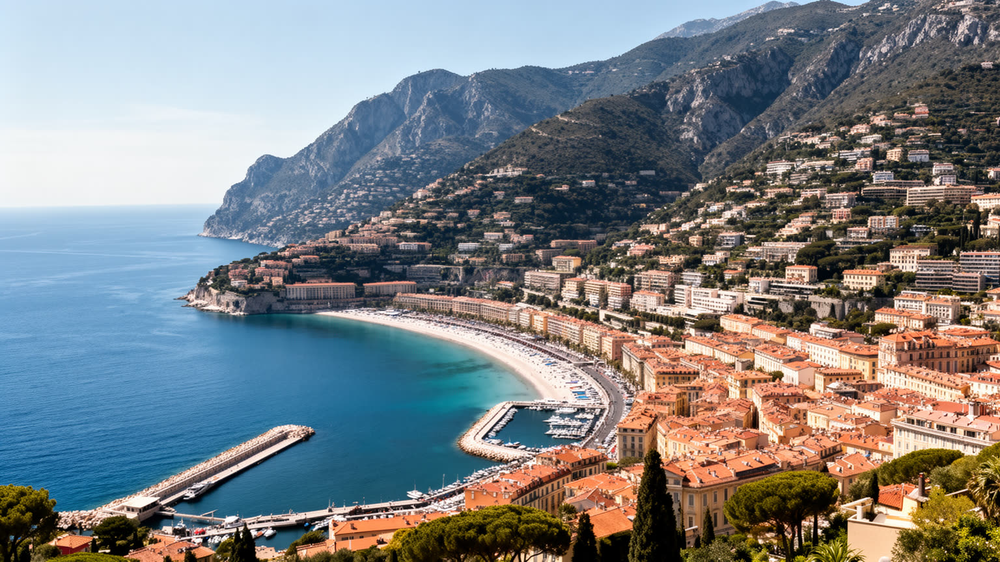
ニースの都市構造は、地中海の湾と背後の丘陵に強く規定されています。青い海岸線は開放的に見えますが、市街地が広がれる平地は限られ、旧市街、港、駅、行政、商店、住宅、ホテル、空港へ向かう道路が細長い帯の中に押し込まれます。北へ上がれば坂道と谷が増え、眺望のよい住宅地、古い村落、道路トンネル、土砂災害の不安が現れます。海岸のプロムナードは都市の象徴であると同時に、防潮、交通、観光、追悼の場所でもあります。地中海性の気候は冬の保養地としての魅力を作りましたが、夏の熱波、局地的豪雨、海面上昇は海辺の都市に新しい負担をかけます。ニースは南仏の穏やかなリゾートとして消費されやすいが、実際には山と海に挟まれた制約の中で、住宅、交通、観光、自然災害への備えを調整する都市です。坂の上と海沿いでは所得、移動手段、日常の距離感も変わります。海を眺める街であるほど、背後の谷や排水路を忘れてはなりません。さらに海岸に近い低地では道路、地下駐車場、商業施設、観光動線が集中し、災害時の脆弱性も高まります。丘陵の緑地は眺望資源であると同時に熱を逃がす余白であり、建て込みすぎれば都市の呼吸は弱くなります。地形を読むことは、景観の美しさと生活の安全を同じ地図に戻す作業です。歩いて楽しい海辺も、地形の制約を忘れれば生活の余白を失います。そこに都市設計の難しさがあります。
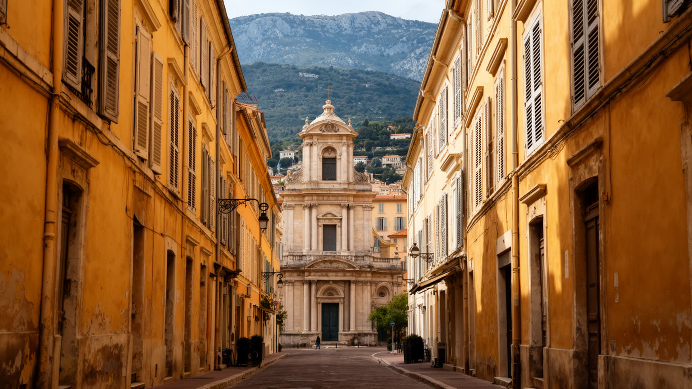
ニースの歴史を読むには、現在のフランスの地図だけでなく、サヴォイア家、ピエモンテ、イタリア語圏、フランス国家の境界変動を重ねて見る必要があります。旧市街の路地、バロック教会、地名、料理、ニサール語の記憶には、地中海の港町が一つの国民文化に収まり切らないことが表れています。一八六〇年にフランスへ編入された後も、都市はイタリア国境に近い場所として、人、商品、労働、亡命、観光を受け入れてきました。第二次世界大戦期の占領、ユダヤ人の避難と迫害、戦後の国境管理も、明るいリヴィエラ像の下にある重要な層です。モナコ、ジェノヴァ、トリノ、マルセイユ、パリへ伸びる交通は、ニースを終点ではなく境界の結節にします。国境都市の感覚は、言語、食、市場、家族の移動、季節労働に残ります。だからニースの魅力は、単なるフランス南部らしさではなく、複数の帰属が重なった柔らかい混成にあります。国境に近い都市では、国家の制度が生活の細部に入り込みます。列車や道路の検問、難民の移動、越境通勤、観光客の自由な往来は、同じ地域で同時に起こります。祝祭の明るさの下で、誰が歓迎され誰が疑われるのかを問うことが、境界都市ニースを理解する鍵になります。博物館や学校がこの複雑な帰属を丁寧に扱えるかも重要です。境界史を隠さない都市ほど、多様な住民の現在を説明できるでしょいます。
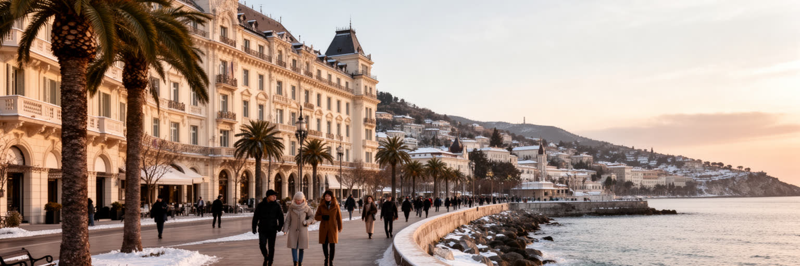
ニースは夏の海水浴都市としてだけでなく、冬の保養地として国際的な名声を得ました。十九世紀以降、英国、ロシア、北欧、フランスの富裕層が温暖な冬を求めて訪れ、海岸沿いの遊歩道、ホテル、別荘、庭園、劇場、教会、社交空間が整えられました。プロムナード・デ・ザングレはその象徴で、散歩する身体、海を見る椅子、馬車や自動車の流れ、ホテルのファサードが、都市をリゾートとして演出しました。世界遺産に登録された冬季保養都市の景観は、建物の美しさだけでなく、気候、医療、余暇、階級、国際移動が作った都市制度を示しています。一方で、保養地の遺産は現代の住宅不足や観光圧力とも結びつきます。美しい外観を保つほど改修費は高くなり、海沿いの土地は住民の日常から遠ざかりやすいです。ニースの遺産を読むことは、優雅なリゾートの記憶と、それを維持する労働、清掃、警備、交通、規制を同時に見ることです。海岸の景観は公共の財産であり、投資対象でもあります。保養地の歴史は、病気療養や長期滞在の文化とも結びつき、病院、薬局、庭園、静かな散歩道を都市に増やしました。今日の短期観光は滞在の速度を速めるが、冬のゆっくりした都市時間をどう残すかも課題になります。遺産は保存するだけでなく、住民が使える日常空間として更新されて初めて生き続けます。海辺の椅子や木陰は、その継承を日々確かめる小さな装置です。
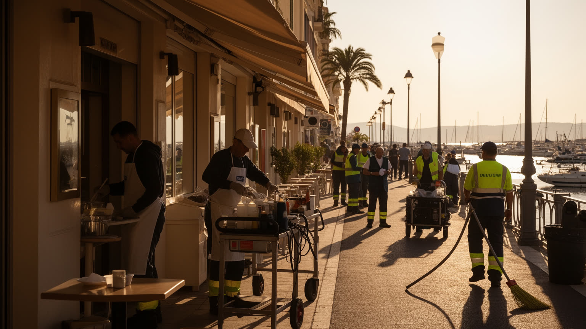
ニース経済の表面には、ホテル、レストラン、海岸、カーニバル、国際会議、美術館、クルーズ、空港から来る旅行者が見えます。ですが観光都市を実際に動かすのは、客室清掃、厨房、給仕、警備、交通案内、空港業務、港湾サービス、イベント設営、廃棄物処理、医療、介護、小売の現場です。夏の繁忙期と冬の保養需要は雇用を増やす一方、季節契約、長時間勤務、低賃金、住居確保の難しさを生みます。観光客にとって市中心部は歩きやすく楽しい一方、働く人は郊外や丘陵部から通勤し、早朝や深夜の移動に依存します。短期賃貸や高級物件が増えるほど、観光を支える人ほど中心に住みにくくなります。ニースの観光を評価するには、宿泊者数や消費額だけでなく、働く人が生活できる賃金、交通、保育、休息、医療へのアクセスを見なければなりません。リヴィエラの優雅さは自然に生まれるものではなく、見えにくい反復労働によって毎朝整えられます。その仕事の尊厳が都市の品質を決めています。観光消費は飲食店や土産物店だけでなく、クリーニング、修理、配送、警備、救急、語学サービスへ広がります。大きなイベントが入る時期には、都市全体の勤務表と交通が変わります。安定した雇用へつなげられるかどうかが、季節都市の社会的な強さを左右します。働く人の休憩場所や更衣室まで含めて、観光地の質は測られます。
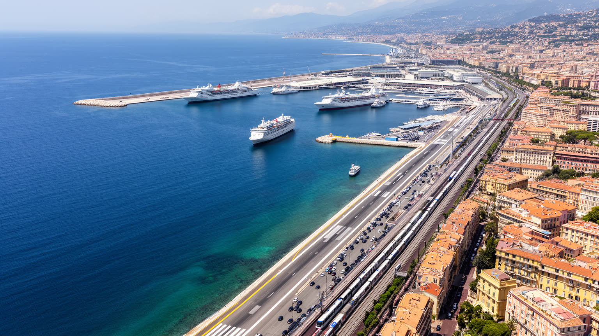
ニースは小さな旧港と巨大な空港という、性格の異なる二つの玄関を持ちます。港にはフェリー、ヨット、漁船、観光船、カフェ、住宅が集まり、旧市街と東側の地区をつなぐ生活の水辺を作ります。空港は海に張り出した平地にあり、パリ、欧州各都市、地中海圏からの来訪者を直接受け入れるため、ニースを単なる地方都市ではなく国際リゾートの入口にしています。空港の便利さは観光と企業活動を支えますが、騒音、排出、海岸の土地利用、交通渋滞、気候政策との緊張も生みます。港もまた、豪華なヨットだけでなく、物資、整備、清掃、係留、安全管理の仕事を必要とします。路面電車が空港、駅、中心部を結ぶことで、来訪者の動線は改善されたが、住民の通勤や病院への移動も同じネットワークに乗ります。海と空の交通を読むと、ニースが観光の舞台であるだけでなく、物流、環境、移動の制約を抱える実務都市であることが分かります。玄関が美しいほど、その維持には厳密な運営が求められます。空港に近いことは国際性を高めますが、土地が限られる海岸都市では拡張の余地も限られます。港の水辺を観光化しすぎれば、作業の場や地域の記憶は薄くなります。交通拠点をどう住民の利益にも結びつけるかが、ニースの都市政策の実力を示します。到着の華やかさと日々の移動の便利さが一致して初めて、玄関は公共財になります。玄関は都市の倫理も映します。
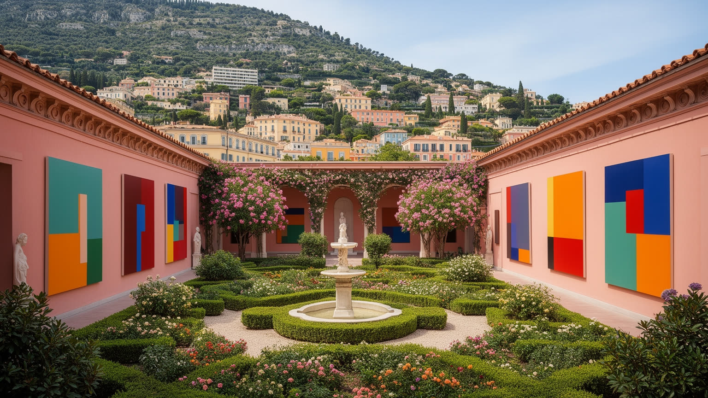
ニースの文化的な強さは、海岸リゾートの華やぎだけでなく、近代美術と地中海の光が結びついた記憶にあります。マティス、シャガール、デュフィ、イヴ・クラインなど、南仏の光や色彩に引かれた芸術家の足跡は、美術館、アトリエ、礼拝堂、庭園、丘陵の眺めに残ります。観光客は作品を目的に訪れるが、芸術は展示室だけでなく、日差しの角度、旧市街の色、海の青、花市、カーニバルの仮装、移民の音楽にも広がります。芸術都市であることは、都市のブランドになる一方、文化施設の維持費、教育、地元作家の発表場所、若者が払える家賃という現実を伴います。名のある巨匠の記憶だけが強くなれば、現在の地域文化や多文化の表現は背景へ退きやすいです。ニースの芸術を読むには、美術館を巡るだけでなく、学校、劇場、路上の音楽、地区の小さなギャラリー、工房の存続を見たいです。地中海の光は誰にでも降りますが、それを文化として残すには公共的な支えが必要です。美術館は雨の日の観光資源であるだけでなく、市民が地域の歴史を学ぶ場所でもあります。作品を守る収蔵庫、修復、教育普及、案内、清掃の仕事は見えにくいです。創造性を都市の飾りにせず、日常の学びへ戻すことが文化都市の条件になります。観光客の鑑賞と住民の参加が重なる時、芸術は都市の共有語になります。若い作り手が残れる家賃と発表の場も欠かせません。
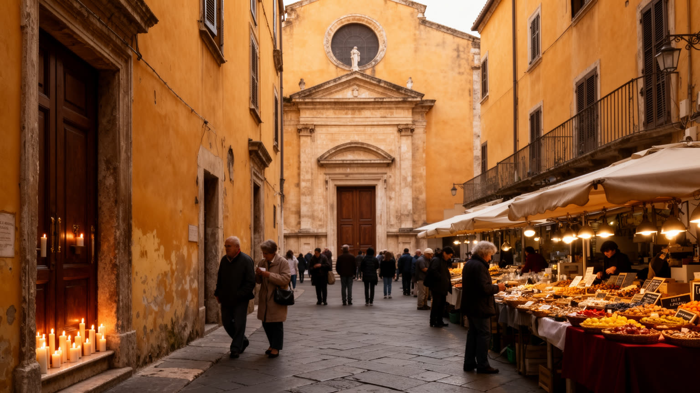
旧市街はニースの観光名所であり、同時に宗教、商業、住民生活が圧縮された地区です。狭い路地、黄色や赤の外壁、バロック教会、市場、食料品店、レストラン、洗濯物、観光客の列が近い距離で重なります。教会は写真の背景であるだけでなく、ミサ、葬儀、祭礼、沈黙の祈りの場であり、周辺にはユダヤ系の記憶、移民の礼拝、世俗化した生活も並びます。市場では花、野菜、魚、オリーブ、香辛料が地域の味を見せるが、観光化が進むほど日常の買い物の場は高価な体験商品へ変わりやすいです。旧市街の住宅は魅力的ですが、古い建物の改修、階段、騒音、短期賃貸、ごみ収集、防火、夏の暑さは生活上の負担になります。信仰と市場のある地区を読むには、路地の美しさだけでなく、誰が住み続け、誰が働き、誰が祈り、誰が消費するのかを見なければなりません。ニース旧市街は、都市の歴史を保存する舞台であると同時に、観光と生活の境界が日々交渉される現場です。夜になると飲食店のにぎわい、音楽、試合帰りの人波は地区の収入を生みますが、住民には騒音やごみとして返ります。宗教行列や市場の準備は、観光客の時間とは違う早朝の都市を作ります。古い路地を生きた地区に保つには、保存と住民サービスを切り離せません。小さな店と日常の礼拝が残るほど、旧市街は飾りではなく生活の場所であり続けます。朝の市場がその均衡を確かめる役目を持ちます。
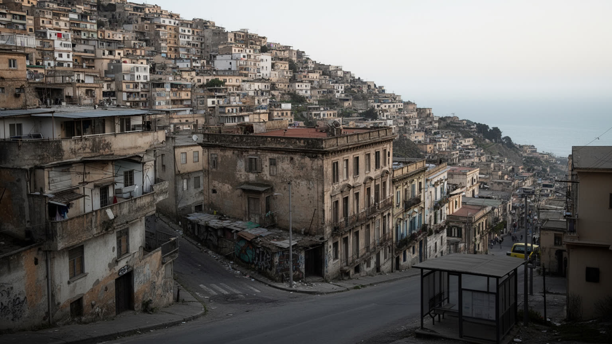
ニースの生活問題は、海岸の美しさと住宅の厳しさが同じ場所にあることから始まります。中心部と海沿いは観光、短期滞在、高齢者の移住、投資需要によって価格が上がり、若い世帯、学生、移民労働者、サービス業の従業員は住まいを探しにくいです。丘陵部や郊外へ移れば家賃は下がる場合もありますが、坂道、バスの本数、通勤時間、学校、医療、買い物の距離が生活を左右します。市内には富裕層の別荘的な空間と、老朽住宅、失業、貧困、社会住宅の不足が近くに並びます。観光都市では路上生活や困窮が景観から隠されやすく、警備や美化が優先されると支援が届きにくくなります。高齢者の多い都市では、介護、病院、独居、夏の暑さへの備えも重要です。住宅をめぐる不平等は、単に家賃の論点ではなく、誰が海に近い公共空間を日常的に使えるかという都市の権利の論点でもあります。ニースを住む街として評価するには、眺めのよさだけでなく、普通の労働者が安心して暮らせる距離と費用を測る必要があります。短期賃貸をめぐる規制、社会住宅の供給、空き家の活用、公共交通の本数は、観光政策と同じくらい重要になります。高級化した中心部から生活機能が消えれば、都市は美しくても暮らしにくい舞台へ近づきます。住民の買い物、保育、診療、休息を守ることが、リゾート都市の土台です。海を共有する権利は、住まいの安定と切り離せません。
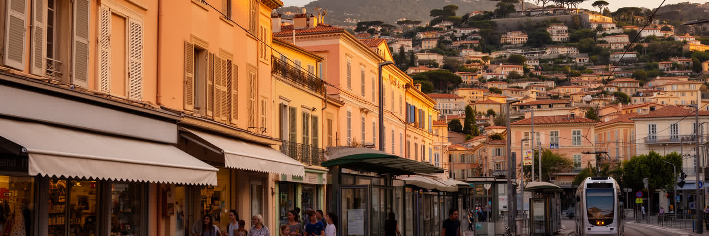
ニースは地中海の国境に近い都市として、イタリア系、北アフリカ系、サハラ以南アフリカ系、東欧系、アジア系を含む多様な移民の生活を受け入れてきました。観光客の国際性は短期の華やかさとして見えますが、移民住民の国際性は学校、病院、清掃、介護、建設、飲食、港、空港、小売、宗教施設の中で日々働きます。複数の言語は市場やトラム、行政窓口、医療の待合室で交わり、家族の送金、在留資格、資格認定、差別、住居探しが生活の課題になります。国境に近いことは移動の自由を感じさせる一方、警備、難民、身分証確認の緊張も伴います。多文化の店や礼拝所は、食事や祈りだけでなく、仕事、住まい、通訳、子育ての情報が集まる場所です。ニースの都市文化を読むには、海岸の国際観光と、住民として根を張る移民の現実を区別して見る必要があります。観光客に開かれた都市が、働き暮らす外国出身者にも同じように開かれているかが問われます。子ども世代は学校でフランス語を身につけながら、家庭では別の言語や宗教暦を保つことも多いです。医療や福祉の窓口に通訳があるか、資格や経験が雇用に結びつくかは、都市の包摂力を具体的に示します。多言語の生活は観光の装飾ではなく、都市を動かす日常の基盤です。地域の祭りや食堂が出会いの場になる一方、差別を減らす制度も欠かせません。開かれた海岸都市ほど、足元の包摂を問われます。
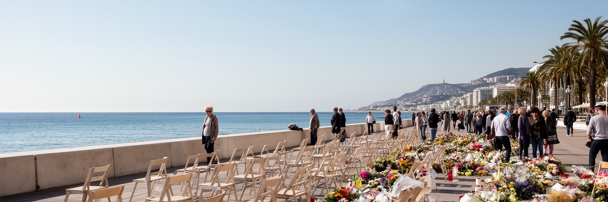
ニース観光は、プロムナード、旧市街、市場、美術館、カーニバル、海水浴、近郊のエズやヴィルフランシュ、モナコへの小旅行で成り立ちます。訪問者は明るい海岸と食の楽しみを求めるが、この都市の公共空間には暴力の記憶も刻まれています。二〇一六年のテロ事件は、海岸遊歩道を単なる散歩道ではなく追悼と安全管理の場所に変えました。観光都市は人を集めることで経済を動かす一方、群衆管理、警備、避難、救急、公共空間の開放性という難しい課題を抱えます。過度な警備は都市の自由を狭めるが、記憶を忘れたにぎわいも無責任です。ニースの海岸では、休暇、日常散歩、追悼、交通、イベント、政治的な式典が同じ舗装の上で重なります。観光客にとっては短い滞在でも、住民にとってその場所は生活の記憶を持ちます。ニースを訪れることは、海の美しさを楽しむだけでなく、都市が悲劇を公共の記憶としてどう抱え、開かれた場所をどう守るかを見ることでもあります。祝祭と追悼は、同じ都市の成熟を測る二つの面です。カーニバルや夏の催しが戻るたびに、都市は楽しさを諦めず、同時に安全を更新する方法を探します。ベンチ、照明、車止め、救急動線、追悼のしるしは、景観の一部として慎重に配置されます。観光の自由は、記憶への敬意と公共空間の信頼によって支えられます。海辺のにぎわいを続けるほど、静かに立ち止まる場所も必要になります。
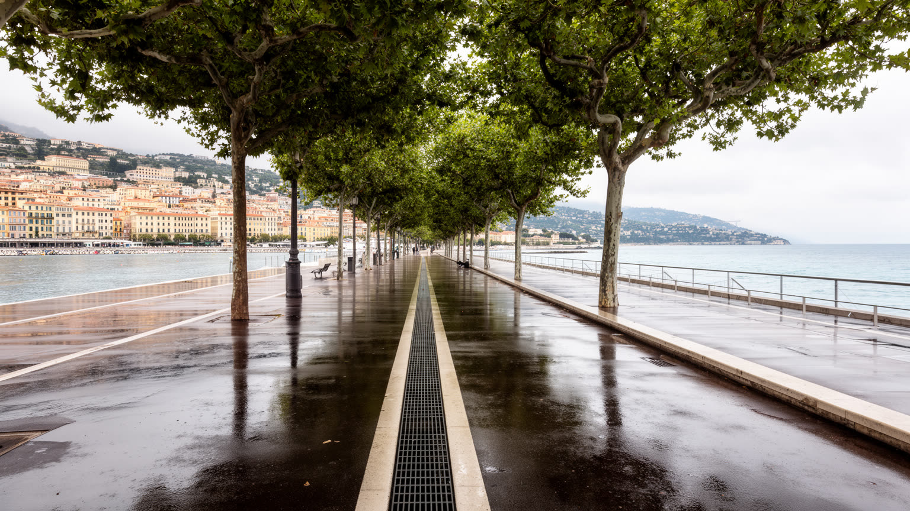
ニースの未来を考えるうえで、気候リスクへの備えは避けられません。地中海性気候の魅力である晴天と温暖さは、サッカーやサイクリングの余暇を支える一方、熱波、乾燥、森林火災リスク、局地的豪雨、洪水、海岸浸食、海面上昇と隣り合わせです。背後の谷から流れる水は短時間で市街地へ集まり、舗装された低地、地下空間、道路、港、空港に被害を与える可能性があります。夏の暑さは観光客だけでなく、高齢者、屋外労働者、低所得世帯、冷房の弱い古い住宅に重くのしかかります。都市は街路樹、日陰、透水性舗装、排水、避難情報、多言語の警報、海岸の保全、公共交通の強化を進めなければなりません。海岸の快適さを売る都市ほど、気候適応は景観の裏方ではなく主役になります。空港や観光産業の排出をどう抑えるかも、リヴィエラの魅力を持続させる条件です。ニースの都市政策は、旅行者に美しい海を見せるだけでなく、住民が暑さと水害の中で安全に暮らせる仕組みを作る必要があります。気候時代のリゾート都市は、快適さの演出ではなく、脆弱性への備えで評価されます。特に高齢者や低所得世帯は、冷房費、断熱改修、避難情報へのアクセスで差が出やすいです。観光客向けの快適な海辺だけでなく、内陸の集合住宅や坂の上の地区にも日陰と涼める場所を増やすことが必要になります。気候適応は都市の公平性そのものと言えます。美しい晴天を守るには、暑さに耐える制度も同じだけ必要です。